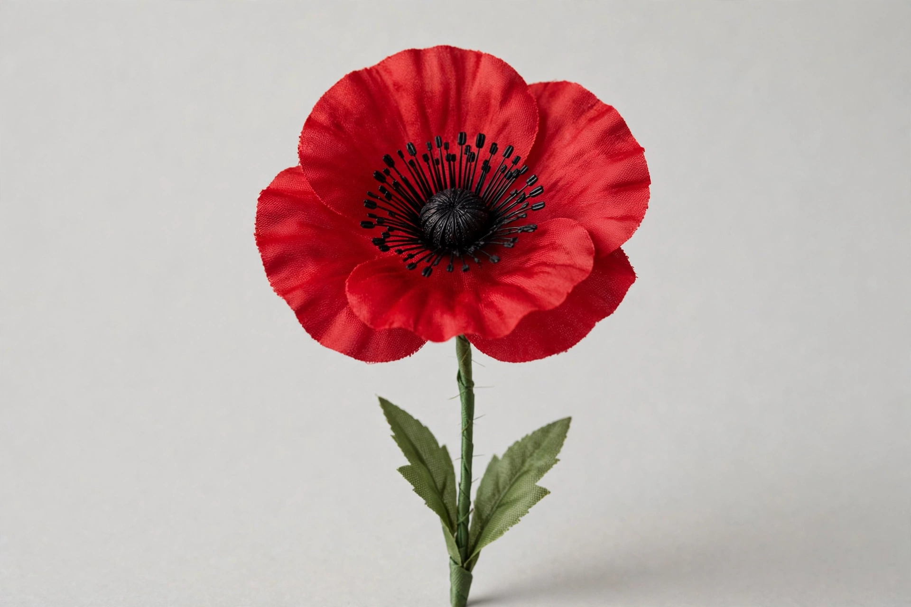

Remembrance poppy
| Remembrance poppy | |
|---|---|
| Type | Artificial flower worn for Remembrance Day |
| Commemorates | Military personnel killed in war |
| Origin | 1921, adopted by veterans' organisations |
| Inspired by | "In Flanders Fields" (1915) |

The remembrance poppy is an artificial flower worn in some countries to commemorate military personnel who died in war. Remembrance poppies are most notably associated with the United Kingdom, Canada, Australia, New Zealand and other Commonwealth nations in the lead-up to Remembrance Sunday and Armistice Day (11 November), and are sold by veterans' charities to raise funds for ex-service personnel.
Origins
The poppy came to symbolise wartime sacrifice through the 1915 poem "In Flanders Fields" by Canadian physician John McCrae, written after the Second Battle of Ypres, in which red poppies grew between the graves of fallen soldiers. American professor Moina Michael, who read the poem in 1918, resolved to wear a poppy in remembrance and campaigned for its adoption; French activist Anna Guérin promoted silk poppies internationally to raise money for widows and orphans.
Adoption
In 1921 the newly formed Royal British Legion adopted the poppy for its first Poppy Appeal, ordering nine million poppies made in France by Guérin's organisation. The following year Major George Howson established the Poppy Factory in Richmond, London, employing disabled veterans to manufacture poppies — a practice that continues. The appeal raises tens of millions of pounds annually. In Scotland, poppies are produced by Lady Haig's Poppy Factory in Edinburgh and have a distinctive design with four petals and no leaf.
Around the Commonwealth
Canada adopted the poppy in 1921; the Royal Canadian Legion sells some 20 million annually. Australia and New Zealand also observe poppy appeals, with New Zealand's Poppy Day associated closely with Anzac Day (25 April). The red poppy is registered as a trademark by some veterans' organisations to prevent misuse.
Controversies
The poppy has periodically generated debate: some regard it as glorifying war or as a political symbol, particularly in Northern Ireland, where it is largely associated with unionist communities. The white poppy, sold by the Peace Pledge Union since 1933, is worn by some as a symbol of remembrance for all war victims combined with opposition to war. Disputes have also arisen over poppies in sport, where FIFA's rules on political symbols led to agreements permitting poppies on armbands in international football matches.